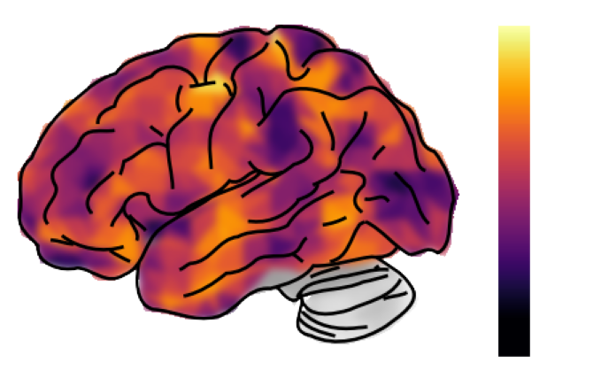
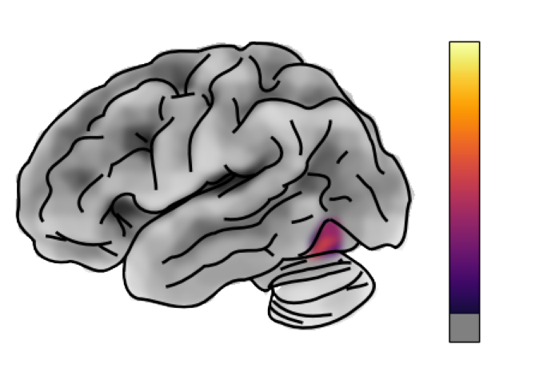
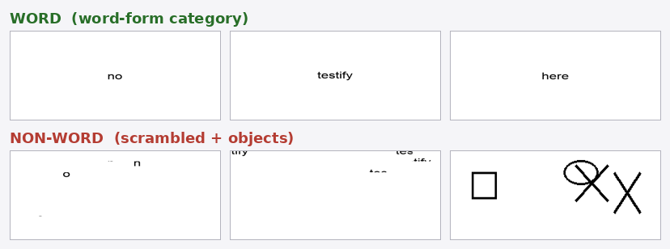

from brainscore import load_model, load_benchmark model = load_model("clip-vit-b-32") score = load_benchmark("MajajHong2015public.IT-pls")(model) # one model. every compatible benchmark. one process() interface.
A model is a Subject. The only evaluation method is
process(input_event) → DataAssembly. The input event decides the
capability — a stimulus set, a state change, or an environment step.
Pick an input type. The model's predicted responses map onto the cortex — the same figure style as a published encoding model.

brainscore.visualization.The headline validation: a benchmark worth running should climb from a bad model to a good one and sit near its null floor for a random model. Pick a capability.
process(StateChange) ablates a unit population, the
benchmark re-scores by generation, and reset() restores
bit-for-bit. Replicating Honarmand et al.'s dyslexia induction shows the
selective deficit emerging with model scale — the honest result is
more interesting than a clean yes/no.

A CompositeSelector gathers a functional population
spanning depth into one region. The population is defined by a functional
localizer — so first, the stimuli that identify it.

Standard mapping records one region from one layer;
'all' records every region in one pass; a
CompositeSelector pools the localized units across layers into
one region.
No result is trusted without a matched null running through the same pipeline. If the real score doesn't clear the floor, the signal is a pipeline artifact — not the model.
Honesty is the product. The same rigor that validates a result has to name where a result is contingent, under-controlled, or only proves plumbing. These are ours.